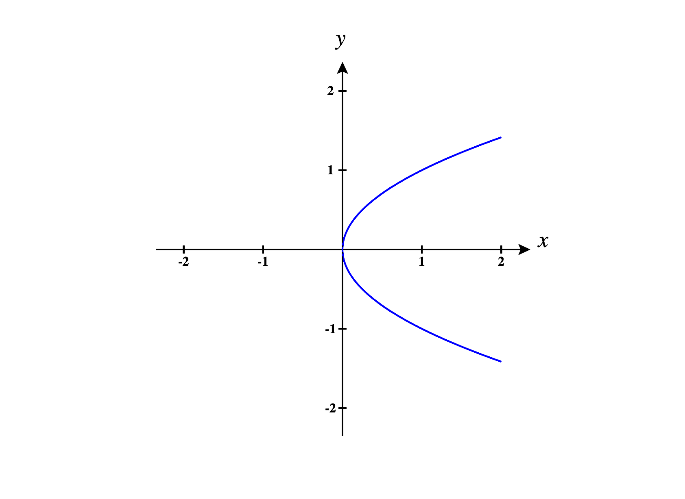
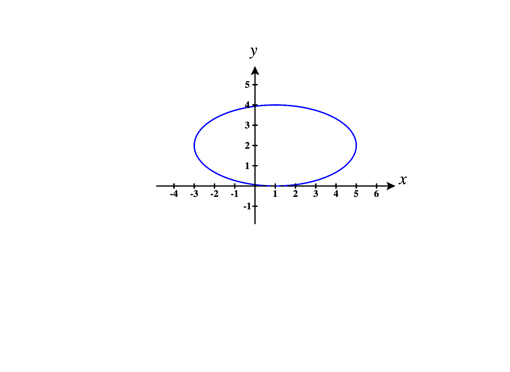
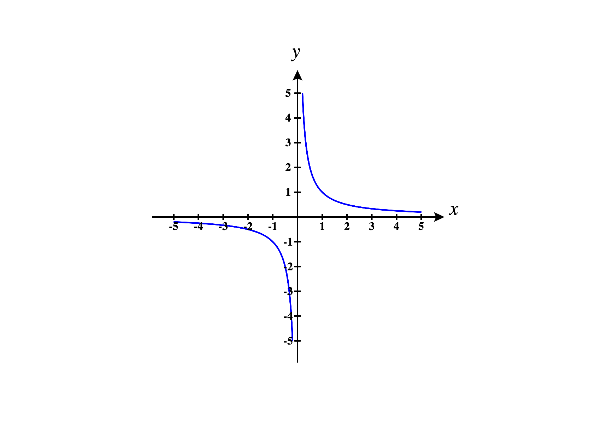
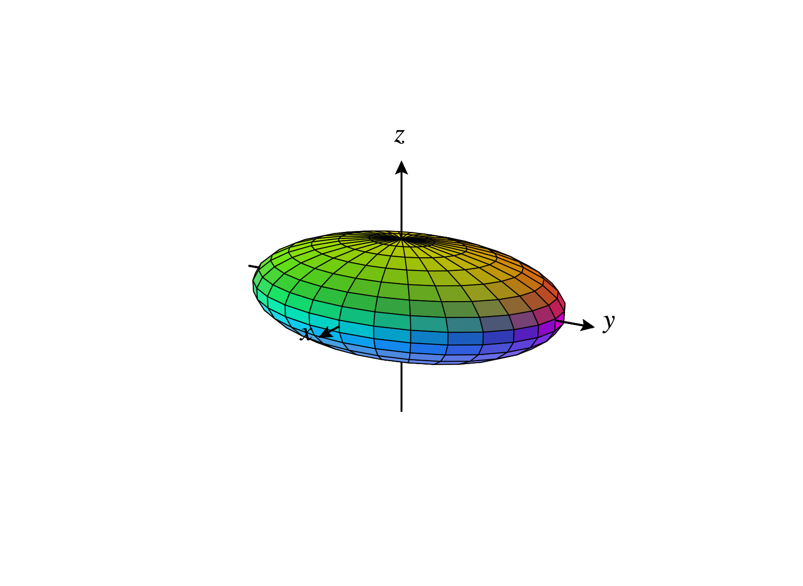
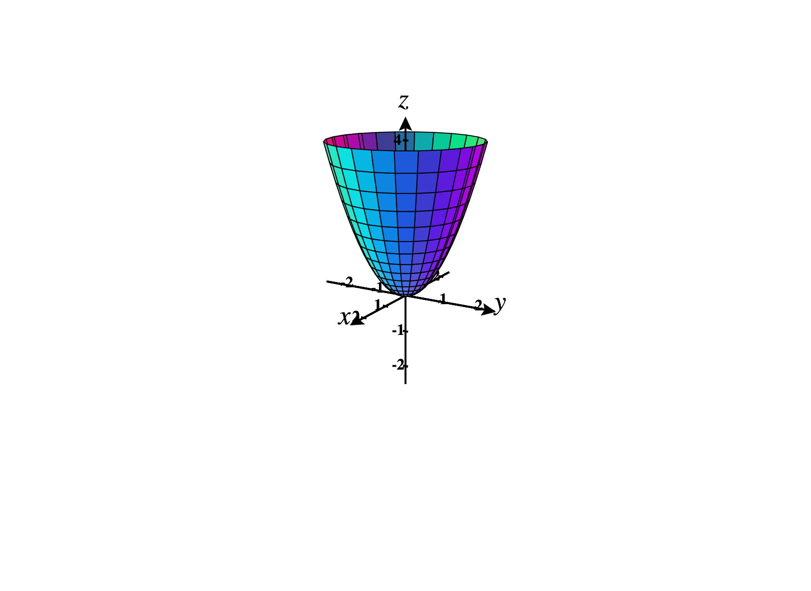
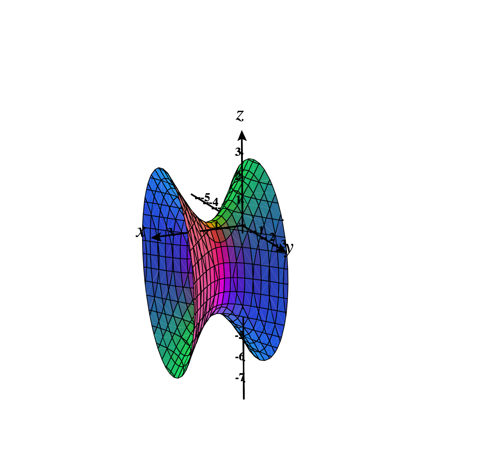

You might remember studying conic sections, such as parabolas, circles, ellipses, and
hyperbolas. These are curves in the plane that arise through polynomial equations of
degree two in two variables.
Some examples of parabolas are given by the equations , , , and (graphed
below).

Some examples of ellipses are given by the equations (which is also a circle), , and
(graphed below).

Some examples of hyperbolas are given by the equations , , and (graphed
below).

Notice that all of these conic sections can be defined by polynomial equations with
terms of total degree at most .
Here, total degree can be computed by adding the -degree and the -degree, so the
term has total degree , and the term has total degree .
Definition of a Quadric Surface
Quadric Surfaces are the three dimensional analogue of conic sections. That is, a
quadric surface is the set of points in satisfying some polynomial of degree two in
three variables.
A
quadric surface is the set of points in satisfying the equation where are
constants.
Simple Forms
Dealing with quadric surfaces in general can be computationally cumbersome, so
we’ll focus on quadric surfaces in some simple forms.
The set of points satisfying for some constants , is called an
ellipsoid.
Below, we graph the ellipsoid .

An ellipsoid is kind of like a three dimensional ellipse. In fact, the sections and
contour curves of such an an ellipsoid are ellipses.
Notice that the ellipsoid above looks like a sphere that’s been stretched in the and
directions. The constants , , and determine how much it is stretched in the , , and
directions, respectively.
In the special case that , this ellipsoid is a sphere of radius .
The set of points satisfying for some constants , is called an
elliptic paraboloid.
Below, we graph the elliptic paraboloid .

The contour curves of such an elliptic paraboloid are ellipses, however the sections
are parabolas which all open in the same direction.
As with ellipsoids, the constants , , and determine how much the elliptic paraboloid
is stretched in the , , and directions, respectively. Furthermore, if is negative, then
the elliptic paraboloid will open downward.
The set of points satisfying for some constants , is called a
hyperbolic paraboloid.
Below, we graph the hyperbolic paraboloid .
Next, we graph the hyperbolic paraboloid . Notice that this reversal of sign is
accomplished by taking , and how it changes the orientation of the hyperbolid
paraboloid.
The contour curves of such a hyperbolic paraboloid are hyperbolas, and the sections
are parabolas opening in opposite directions for and sections. This surface is often
described as a “saddle”.
As usual, the constants , , and determine how much the hyperbolic paraboloid is
stretched in the , , and directions, respectively. The sign of also controls the
orientation of the hyperbolic paraboloid.
The set of points satisfying for some constants , is called an
elliptic cone.
Below, we graph the cone .
The contour curves of such an elliptic cone are ellipses, and the sections by and are
pairs of intersecting lines.
As usual, the constants , , and determine how much the cone is stretched in the , ,
and directions, respectively.
The set of points satisfying for some constants , is called a
hyperboloid of one
sheet.
Below, we graph the hyperboloid of one sheet defined by the equation .
The contour curves of such a hyperboloid are ellipses, and the sections are
hyperbolas.
As usual, the constants , , and determine how much the hyperboloid is stretched in
the , , and directions, respectively.
The set of points satisfying for some constants , is called a
hyperboloid of two
sheets.
Below, we graph the hyperboloid of two sheets defined by the equation .
The contour curves of such a hyperboloid are ellipses, and the sections are
hyperbolas. We describe this as the hyperboloid “of two sheets” since it has two
disconnected pieces, as opposed to the hyperboloid of one sheet, which has only
one.
As usual, the constants , , and determine how much the hyperboloid is stretched in
the , , and directions, respectively.
The cone, hyperboloid of one sheet, and hyperboloid of two sheets are closely related.
In fact, they can all be viewed as variants of an equation of the form In the case
where , this is a cone. In the case where , this is a hyperboloid of one sheet. In the
case where , this is a hyperboloid of two sheets.
Some Other Forms
Although we won’t really work with quadric surfaces in their most general form,
we will consider quadric surfaces that are translations of the forms given
above.
For example, the graph of the equation is an ellipsoid centered at .
However, equations describing quadric surfaces might not always be given to you in
easily identifiable forms. In these cases, you might have to do some algebra in order
to get the equation into a form where it can be identified as a particular
quadric surface. These manipulations will frequently involve completing the
square.
We now work through an example of identifying a quadric surface given in a
non-standard form.
Identify the type of quadric surface determined by the equation and sketch a graph
of this surface.
Our strategy for writing this equation in a recognizable form will be to group terms
involving , group terms involving , and group terms involving . We’ll then complete
the square for each variable.
Grouping terms by variable, we have For each of these grouping, we factor out the
leading coefficient, obtaining We now add or subtract as needed to make the
quadratics into squares, getting We factor the quadratics to get Finally, we divide
by the constant on the right, to get the final form We can see that this quadric
surface is centered at , but maybe it still isn’t apparent which quadric surface this
determines.
Notice that this form is similar to our standard form for a hyperboloid of one sheet,
except here it’s the -term that’s subtracted instead of the -term. This is because this
is, in fact, a hyperboloid of one sheet, it just happens to be “around” a line parallel
to the -axis, rather than a vertical line.
Let’s look at a section, in order to help with our sketch. Taking the section , we have
an ellipse parallel to the -plane, centered at , with radii and .
Combining our observations, we can sketch the graph of this hyperboloid as
below.

Images were generated using CalcPlot3D.